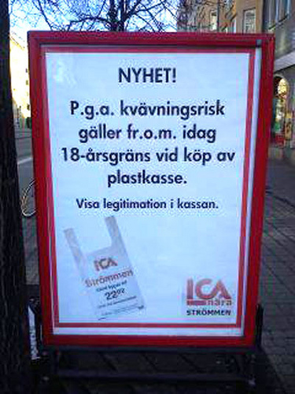

Här kommer jag lista mina tre roligaste skämt
- Vet du varför norrmännen inte ser Hulken på TV?
- De går när det blir grön gubbe
- Alla barnen gjorde det i toaletten förutom Allan
- Han gjorde det i brallan
- Tjejen säger: "Jag fryser"
- Killen svarar: "Men gå bort till hörnet, där är det 90 grader"